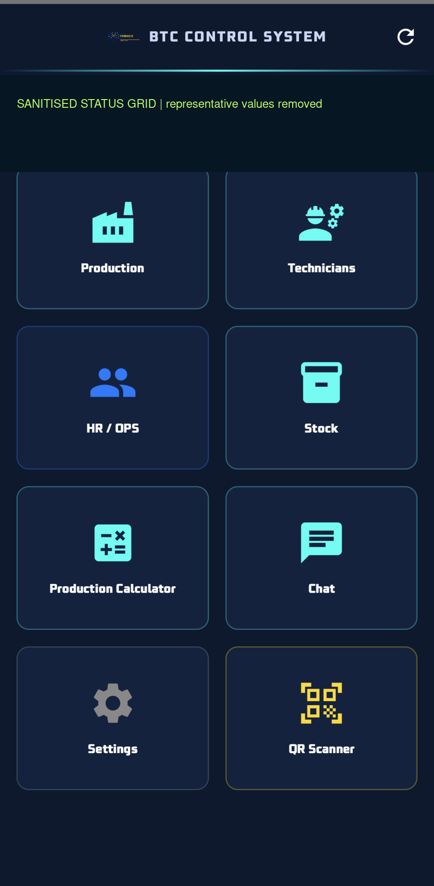
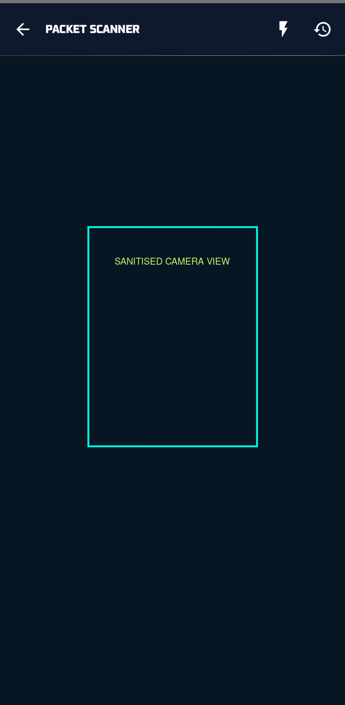
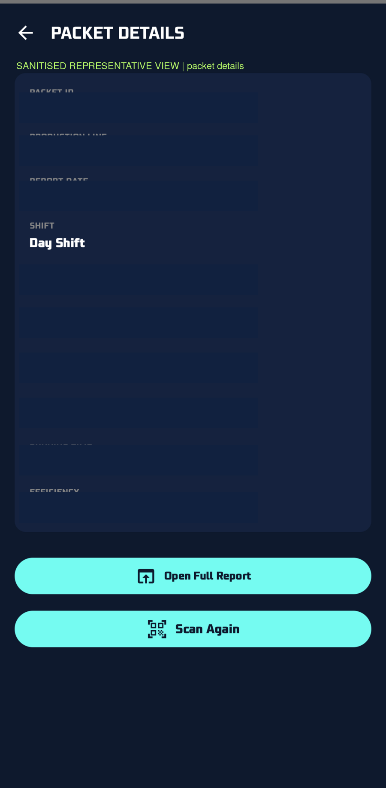
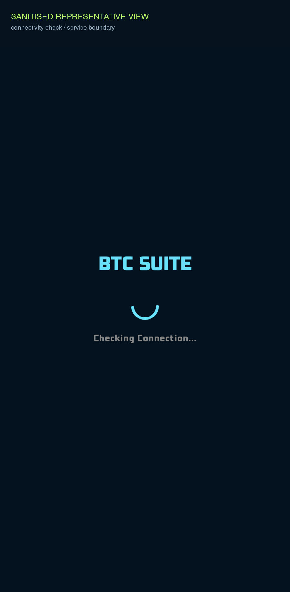

Android Operations App
An authenticated Android client for operational login, server-health checks, QR / Data Matrix scanning and controlled access to production packet information.
PROJECT OVERVIEW
The client provides a mobile entry point into the BTC operational workflow. Its maintained Android source includes Compose screens, authentication, configurable server connectivity, health checks, scanner flows and production/reporting surfaces.
The public-safe evidence shows representative UI states only. It does not imply that the private backend, APK or device environment is publicly available.
THE PROBLEM
Field users need a compact way to authenticate, test the configured backend, scan a packet and inspect the returned context without carrying a desktop workflow to the line. The engineering problem is to keep the mobile client explicit about connectivity, authentication and pending states so that a network failure is not mistaken for a valid operational result.
HOW IT IS USED
The user configures the approved server, runs the health check and signs in. From the authenticated dashboard they open the QR scanner, scan a packet code and review the packet details or report link returned by the API. If the server is unreachable or the result is pending, the app exposes that state and offers a recovery path rather than fabricating data.
PROJECT EVIDENCE
Four real Android interface captures are published as sanitized derivatives. Identifiers, server values, dates and operational details are removed or masked; the authored hero artwork is not reused here.




HOW IT WORKS
The client keeps authentication, scan input, API access and response presentation as separate steps. A response is mapped into a visible UI state; network and pending conditions remain explicit.
ENGINEERING HIGHLIGHTS
- Compose-based screens keep login, health, dashboard, scanner and packet states in one mobile navigation model.
- CameraX and ML Kit barcode scanning support QR and Data Matrix input.
- Retrofit and OkHttp provide the HTTP boundary, while response mapping keeps API state separate from presentation.
- Explicit pending and error handling reduces the risk of displaying incomplete operational data as final.
- Session and configured-server boundaries are treated as application state rather than hidden constants.
CURRENT CAPABILITIES
- Authenticated login and session-aware navigation.
- Configurable server URL and health-check path.
- QR / Data Matrix scanning with packet lookup.
- Production, report, dashboard and technician-facing mobile surfaces in the maintained Android source.
- Visible network, pending and recovery states.
POTENTIAL / NEXT APPLICATIONS
Could be extended to provide an authoritative offline packet-report cache and stronger cross-field date consistency checks. Potential applications include approved warehouse scanning, mobile maintenance handover and quality-review workflows. The architecture could be adapted to other authenticated field applications after transport, identity and device-acceptance gates are completed.
TECHNOLOGY
Verified project-specific stack: Kotlin, Android / Jetpack Compose, CameraX, ML Kit Barcode Scanning, Retrofit, OkHttp, Room, AndroidX Navigation, Hilt and REST API integration.
LIMITATIONS / PRIVACY
This is a private mobile implementation. No signing keys, access tokens, private URLs, internal APKs, employee identities or operational records are published. The public evidence is automated/sanitized interface evidence; physical-device acceptance, clean release build acceptance and live backend handoff are not claimed here.
RELATED PROJECTS / LINKS
Continue to the deterministic local planning demo.
NEXT: PRODUCTION CALCULATOR